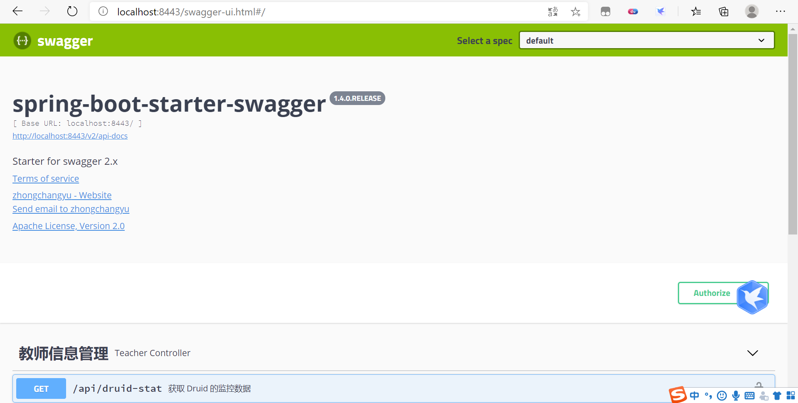

使用Swagger2构建强大的API文档
随着前后端分离架构和微服务架构的流行，我们使用Spring Boot来构建RESTful API项目的场景越来越多。通常我们的一个RESTful API就有可能要服务于多个不同的开发人员或开发团队：IOS开发、Android开发、Web开发甚至其他的后端服务等。为了减少与其他团队平时开发期间的频繁沟通成本，传统做法就是创建一份RESTful API文档来记录所有接口细节，然而这样的做法有以下几个问题：
- 由于接口众多，并且细节复杂（需要考虑不同的HTTP请求类型、HTTP头部信息、HTTP请求内容等），高质量地创建这份文档本身就是件非常吃力的事，下游的抱怨声不绝于耳。
- 随着时间推移，不断修改接口实现的时候都必须同步修改接口文档，而文档与代码又处于两个不同的媒介，除非有严格的管理机制，不然很容易导致不一致现象。
为了解决上面这样的问题，本文将介绍RESTful API的重磅好伙伴Swagger2，它可以轻松的整合到Spring Boot中，并与Spring MVC程序配合组织出强大RESTful API文档。它既可以减少我们创建文档的工作量，同时说明内容又整合入实现代码中，让维护文档和修改代码整合为一体，可以让我们在修改代码逻辑的同时方便的修改文档说明。另外Swagger2也提供了强大的页面测试功能来调试每个RESTful API。具体效果如下图所示：

下面来具体介绍，在Spring Boot中使用程序猿DD实现的starter来整合Swagger。该整合项目的Github：https://github.com/SpringForAll/spring-boot-starter-swagger。
第一步：添加swagger-spring-boot-starter依赖
在pom.xml中加入依赖，具体如下：
<!--添加swagger-spring-boot-starter依赖（依赖1）-->
<dependency>
<groupId>com.spring4all</groupId>
<artifactId>swagger-spring-boot-starter</artifactId>
<version>1.9.0.RELEASE</version>
</dependency>
<!--end-->
或者下面的原始的swagger依赖
<!--添加springfox-boot-starter依赖（依赖2）-->
<dependency>
<groupId>io.springfox</groupId>
<artifactId>springfox-boot-starter</artifactId>
<version>3.0.0</version>
</dependency>
第二步：应用主类中添加注解
依赖1使用的注解：@EnableSwagger2Doc注解。
依赖2使用的注解：@EnableSwagger2。
具体如下
@EnableSwagger2Doc//@EnableSwagger2
@SpringBootApplication
public class ZcyApplication {
public static void main(String[] args) {
SpringApplication.run(ZcyApplication.class, args);
}
}
第三步：application.properties中配置文档相关内容，比如
#swagger
#swagger.title：标题
swagger.title=spring-boot-starter-swagger
#swagger.description：描述
swagger.description=Starter for swagger 2.x
#swagger.version：版本
swagger.version=1.4.0.RELEASE
#swagger.license：许可证
swagger.license=Apache License, Version 2.0
#swagger.licenseUrl：许可证URL
swagger.licenseUrl=https://www.apache.org/licenses/LICENSE-2.0.html
#swagger.termsOfServiceUrl：服务条款URL
swagger.termsOfServiceUrl=https://github.com/dyc87112/spring-boot-starter-swagger
#swagger.contact.name：维护人
swagger.contact.name=zhongchangyu
#swagger.contact.url：维护人URL
swagger.contact.url=https://github.com/zhongchangyuyu
#swagger.contact.email：维护人email
swagger.contact.email=rain66_zcy@163.com
#swagger.base-package：swagger扫描的基础包，默认：全扫描
swagger.base-package=com.psbc
#swagger.base-path：需要处理的基础URL规则，默认：/**
swagger.base-path=/**
更多配置说明可见官方说明：https://github.com/SpringForAll/spring-boot-starter-swagger
第四步：启动应用
依赖1访问：http://localhost:8443/swagger-ui.html，
依赖2访问：http://localhost:8443/swagger-ui/index.html#/，
就可以看到如下的接口文档页面：


第五步：添加文档内容
在整合完Swagger之后，在http://localhost:8443/swagger-ui.html页面中可以看到，关于各个接口的描述还都是英文或遵循代码定义的名称产生的。这些内容对用户并不友好，所以我们需要自己增加一些说明来丰富文档内容。如下所示，我们通过@Api，@ApiOperation注解来给API增加说明、通过@ApiImplicitParam、@ApiModel、@ApiModelProperty注解来给参数增加说明。
比如下面的例子：
在TeacherController文件下编写如下代码
package com.psbc.zcy.demo.controller;
import com.alibaba.druid.stat.DruidStatManagerFacade;
import com.psbc.zcy.demo.service.TeacherService;
import com.psbc.zcy.demo.dto.Teacher;
import com.psbc.zcy.demo.common.Result;
import io.swagger.annotations.Api;
import io.swagger.annotations.ApiImplicitParam;
import io.swagger.annotations.ApiOperation;
import org.springframework.beans.factory.annotation.Autowired;
import org.springframework.validation.BindingResult;
import org.springframework.validation.ObjectError;
import org.springframework.web.bind.annotation.*;
import javax.validation.Valid;
import java.util.List;
@Api(tags = "教师信息管理")
@RestController("/Validate") // @RestController = @Controller + @ResponseBody
public class TeacherController {
@Autowired //@Autowired是一种注解，可以对成员变量、方法和构造函数进行标注，来完成自动装配的工作
private TeacherService teacherService;
//获取 Druid 的监控数据
@GetMapping("/api/druid-stat")
@ApiOperation(value = "获取 Druid 的监控数据")
public Object druidStat(){
// DruidStatManagerFacade#getDataSourceStatDataList 该方法可以获取所有数据源的监控数据
// 除此之外 DruidStatManagerFacade 还提供了一些其他方法，我们可以按需选择使用。
return DruidStatManagerFacade.getInstance().getDataSourceStatDataList();
}
// 新增教师信息
@CrossOrigin // 解决跨域问题
@PostMapping("/api/teacher/add")
@ApiOperation(value = "新增一条教师信息",notes = "根据Teacher对象创建用户")
@ApiImplicitParam(paramType = "body", dataType = "Teacher", name = "teacher", value = "教师对象", required = true)
public Result add(@RequestBody Teacher teacher) {
return new Result<>(teacherService.addTeacher(teacher));
}
//查询教师信息
@CrossOrigin
@PostMapping("/api/teacher/list")
@ApiOperation(value = "获取教师信息列表",notes = "根据url的q来查询教师信息")
@ApiImplicitParam(paramType = "query", dataType = "String", name = "q", value = "查询值", required = true, example = "钟昌余")
public Result list(@RequestParam String q) throws Exception {
// 1.获得所有教师记录
try {
List<Teacher> allTeacher = teacherService.getAllTeacher(q);
return new Result(allTeacher);
} catch (Exception e) {
return new Result(e);
}
}
//通过教师编号查询教师信息
@CrossOrigin
@PostMapping("/api/teacher/query_teacher_by_t_id")
@ApiOperation(value = "获取教师信息",notes = "根据Teacher对象的tid来查询教师信息")
public Teacher queryTeacherBytId(@RequestBody Teacher teacher) {
return teacherService.getTeacherBytId(teacher);
}
//修改教师信息
@CrossOrigin
@PostMapping("/api/teacher/update_teacher_by_teacher_tid")
@ApiOperation(value = "修改教师信息",notes = "根据Teacher对象的id来修改教师信息")
public Result updateTeacherBytId(@Valid @RequestBody Teacher teacher, BindingResult res) {
System.out.println(teacher);
if(res.hasErrors()) {
for (ObjectError error : res.getAllErrors()) {
System.out.println(error.getDefaultMessage());
return new Result<>(-1, error.getDefaultMessage());
}
}
return new Result<>(teacherService.modifyTeacher(teacher));
}
//通过教师编号tid删除教师信息
@CrossOrigin
@PostMapping("/api/teacher/delete_teacher_by_teacher_id")
@ApiOperation(value = "删除教师信息",notes = "根据Teacher对象的的tid来删除教师信息")
public void deleteTeacherBytId(@RequestBody Teacher teacher) {
teacherService.removeTeacher(teacher);
}
//通过编号id删除教师信息
@CrossOrigin
@DeleteMapping("/api/teacher/delete_teacher_by_id")
@ApiOperation(value = "删除教师信息",notes = "根据url的id来删除教师信息")
public Result deleteById(@RequestParam int id) {
return new Result<>(teacherService.removeTeacherById(id));
}
}
在Teacher.java文件夹下编写如下代码：
package com.psbc.zcy.demo.dto;
import com.fasterxml.jackson.annotation.JsonProperty;
import io.swagger.annotations.ApiModel;
import io.swagger.annotations.ApiModelProperty;
import lombok.Data;
import javax.validation.constraints.Min;
import javax.validation.constraints.NotNull;
import javax.validation.constraints.Size;
//1、@Data可以为类提供读写功能，从而不用写get、set方法。
//2、他还会为类提供 equals()、hashCode()、toString() 方法
@Data
@ApiModel(description="教师实体")
public class Teacher {
//@JsonProperty 此注解用于属性上，作用是把该属性的名称序列化为另外一个名称，
//如把id属性序列化为id，由于tName第一个单词只有一个字母，所以加此注解
@JsonProperty("id")
@ApiModelProperty("编号")
private Integer id;
@NotNull
@JsonProperty("tName")
@ApiModelProperty("教师姓名")
private String tName;
@NotNull
@Min(value = 0, message = "教师编号错误，需要大于等于0")
@JsonProperty("tId")
@ApiModelProperty("教师编号")
private String tId;
@NotNull
@JsonProperty("tAge")
@ApiModelProperty("年龄")
private Integer tAge;
@NotNull
@JsonProperty("tSex")
@ApiModelProperty("性别")
private String tSex;
@NotNull
@Size(min = 1, max = 100, message = "地址长度错误，最小值为1，最大值为100")
@JsonProperty("tAddress")
@ApiModelProperty("地址")
private String tAddress;
@NotNull
@JsonProperty("tSubject")
@ApiModelProperty("科目")
private String tSubject;
}
完成上述代码添加后，启动Spring Boot程序，访问：http://localhost:8443/swagger-ui.html，就能看到下面这样带中文说明的文档了（其中标出了各个注解与文档元素的对应关系以供参考）：


第六步 API文档访问与调试
在上图请求的页面中，我们看到user的Value是个输入框？是的，Swagger除了查看接口功能外，还提供了调试测试功能，我们可以点击上图中右侧的Model Schema（黄色区域：它指明了User的数据结构），此时Value中就有了user对象的模板，我们只需要稍适修改，点击下方“Try it out！”按钮，即可完成了一次请求调用！
此时，你也可以通过几个GET请求来验证之前的POST请求是否正确。
相比为这些接口编写文档的工作，我们增加的配置内容是非常少而且精简的，对于原有代码的侵入也在忍受范围之内。因此，在构建RESTful API的同时，加入Swagger来对API文档进行管理，是个不错的选择。
所用注解含义
@ApiOperation和@ApiParam为添加的API相关注解，个参数说明如下：@ApiOperation(value = “接口说明”, httpMethod = “接口请求方式”, response = “接口返回参数类型”, notes = “接口发布说明”；其他参数可参考源码；@ApiParam(required = “是否必须参数”, name = “参数名称”, value = “参数具体描述”
@ApiImplicitParams：用在方法上包含一组参数说明@ApiImplicitParam：用在@ApiImplicitParams注解中，指定一个请求参数的各个方面
paramType：参数放在哪个地方
header-->请求参数的获取：@RequestHeader
query-->请求参数的获取：@RequestParam
path（用于restful接口）-->请求参数的获取：@PathVariable
body（不常用）
form（不常用）
name：参数名
dataType：参数类型
required：参数是否必须传
value：参数的意思
defaultValue：参数的默认值
@ApiResponses：用于表示一组响应
@ApiResponse：用在@ApiResponses中，一般用于表达一个错误的响应信息
code：数字，例如400
message：信息，例如"请求参数没填好"
response：抛出异常的类